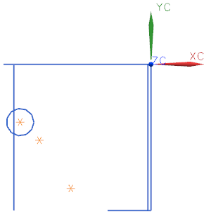
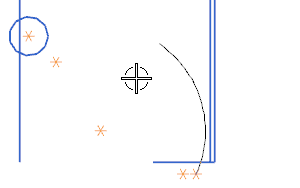
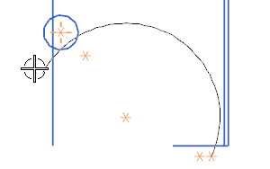

创建一个圆弧
-
在基本曲线对话框中，点击圆弧 。
对话框将发生变化：
-
新添加了创建方法组
-
新添加了整圆复选框，这让您可以使用圆弧方法创建圆。
-
新添加了备选解，但只有在您创建圆弧后可用，这让您可以创建创建圆的补弧。
大圆的半径为45.0 mm。

要把圆弧放置到轮廓中正确的位置上，它的圆心必须放在如图所示 WCS 原点的下方。

提示栏将提示您指出圆弧的起点，因为您使用的创建方法是默认的起点，终点，圆弧上的点。
-
-
在创建方法组中，点击中心点，起点，终点。
提示栏将提示您指出圆弧的中心。
-
在跟踪条上的 XC 输入框中，键入 –76，按下 Tab 以跳到 YC 输入框，键入–118并回车。
圆弧中心显示为一个星号，并且出现一条起始于圆心的直线。

您指定的下一个点将产生起始角度及半径这两个参数，这两个参数都可以在您创建圆之后修改。
-
点击如图所示位置附近的点。

注意，当您移动光标时，圆弧同时显示，圆弧的半径等于您刚才指定的两点间的距离。

-
移动圆弧终点直到大致如下图所示，然后在图形区域中单击。

-
在跟踪条上，将半径更改为44并回车。
-
刷新视图。